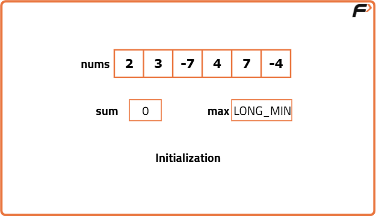
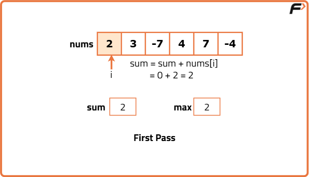
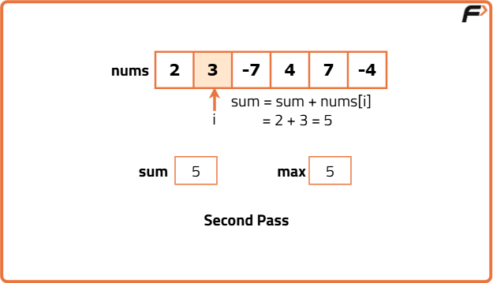
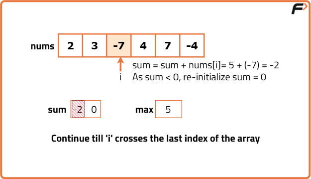
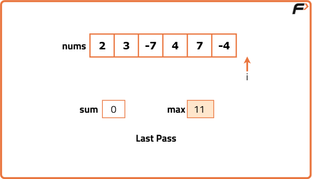

Kadane's Algorithm : Maximum Subarray Sum in an Array
Problem Statement:
Given an integer array nums, find the subarray with the largest sum and return the sum of the elements present in that subarray.
A subarray is a contiguous non-empty sequence of elements within an array.
Examples
Example 1: Input: nums = [2, 3, 5, -2, 7, -4] Output: 15 Explanation: The subarray from index 0 to index 4 has the largest sum = 15, which is the maximum sum of any contiguous subarray. Example 2: Input: nums = [-2, -3, -7, -2, -10, -4] Output: -2 Explanation: The largest sum is -2, which comes from taking the element at index 0 or index 3 as the subarray. Since all numbers are negative, the subarray with the least negative number gives the largest sum.
Disclaimer: Here is the practice link to help you assess your knowledge better. It's highly recommend trying to solve it before looking at the solution.
Brute Force
Algorithm
- Iterate through the array with variable
i, which represents the starting index of each subarray. The possible values forirange from 0 ton-1, wherenis the size of the array. - Inside the first loop, run another loop with variable
jthat represents the ending index of the subarray. For eachi,jcan range fromiton-1. - For each subarray defined by
iandj, iterate through its elements to calculate the sum. Maintain a variable,max, to store the maximum sum encountered so far during the iteration. - At each step, compare the current subarray sum with the current
maxvalue. If the current sum is greater, update themaxvalue with the new sum. - Finally, after completing all iterations, return the
maxvariable, which holds the maximum sum of any subarray.
Code
#include<bits/stdc++.h>
using namespace std;
class Solution {
public:
//Function to find maximum sum of subarrays
int maxSubArray(vector<int>& nums) {
/* Initialize maximum sum with
the smallest possible integer*/
int maxi = INT_MIN;
// Iterate over each starting index of subarrays
for (int i = 0; i < nums.size(); i++) {
/* Iterate over each ending index
of subarrays starting from i*/
for (int j = i; j < nums.size(); j++) {
// Variable to store the sum of the current subarray
int sum = 0;
// Calculate the sum of subarray nums[i...j]
for (int k = i; k <= j; k++) {
sum += nums[k];
}
/* Update maxi with the maximum of its current
value and the sum of the current subarray*/
maxi = max(maxi, sum);
}
}
// Return the maximum subarray sum found
return maxi;
}
};
int main() {
vector<int> arr = { -2, 1, -3, 4, -1, 2, 1, -5, 4};
//create an instance of Solution class
Solution sol;
int maxSum = sol.maxSubArray(arr);
//Print the max subarray sum
cout << "The maximum subarray sum is: " << maxSum << endl;
return 0;
}
Complexity Analysis
Time Complexity: O(N^3), where N is the size of the array. This is because we have three nested loops: one for the starting index, one for the ending index, and one for calculating the sum of the subarray.
Space Complexity: O(1), as we are using a constant amount of space for variables, regardless of the input size.
Better Approach
Algorithm
- Iterate through the array with variable
i, which represents the starting index of each subarray. The possible values forirange from 0 ton-1, wherenis the size of the array. - Inside the first loop, iterate again with variable
jto signify the ending index of the subarray and the current element of the subarray. For eachi,jcan range fromiton-1. - For each subarray defined by
iandj, add the current element atarr[j]to the sum of the previous subarray. - Keep track of the maximum sum encountered during the iteration using a variable, say
maxSum, and update it whenever a greater sum is found. - Once all iterations are complete, return
maxSumas the maximum sum of all subarrays.
Code
#include <bits/stdc++.h>
using namespace std;
class Solution {
public:
// Function to find maximum sum of subarrays
int maxSubArray(vector<int>& nums) {
/* Initialize maximum sum with
the smallest possible integer*/
int maxi = INT_MIN;
// Iterate over each starting index of subarrays
for (int i = 0; i < nums.size(); i++) {
/* Variable to store the sum
of the current subarray*/
int sum = 0;
/* Iterate over each ending index
of subarrays starting from i*/
for (int j = i; j < nums.size(); j++) {
/* Add the current element nums[j] to
the sum i.e. sum of nums[i...j-1]*/
sum += nums[j];
/* Update maxi with the maximum of its current
value and the sum of the current subarray*/
maxi = max(maxi, sum);
}
}
// Return the maximum subarray sum found
return maxi;
}
};
int main() {
vector<int> arr = { -2, 1, -3, 4, -1, 2, 1, -5, 4 };
// Create an instance of Solution class
Solution sol;
int maxSum = sol.maxSubArray(arr);
// Print the max subarray sum
cout << "The maximum subarray sum is: " << maxSum << endl;
return 0;
}Complexity Analysis
Time Complexity: O(N^2), where N is the size of the array. This is because we have two nested loops: one for the starting index and one for the ending index of the subarray.
Space Complexity: O(1), as we are using a constant amount of space for variables, regardless of the input size.
Optimal Approach
Algorithm
- Iterate through the array using a variable
i. During each iteration, add the current elementarr[i]to a runningsumvariable. - Keep track of the maximum sum encountered during the iteration by comparing the current
sumwith the previous maximum sum, and update it if the currentsumis greater. - If at any point the
sumbecomes negative, reset it to 0, as a negative sum won't contribute positively to the overall maximum sum. - Continue the iteration until all elements in the array are processed.
- Finally, return the maximum sum encountered during the iteration.





Code
#include <bits/stdc++.h>
using namespace std;
class Solution {
public:
// Function to find maximum sum of subarrays
int maxSubArray(vector<int>& nums) {
// maximum sum
long long maxi = LLONG_MIN;
// current sum of subarray
long long sum = 0;
// Iterate through the array
for (int i = 0; i < nums.size(); i++) {
// Add current element to the sum
sum += nums[i];
// Update maxi if current sum is greater
if (sum > maxi) {
maxi = sum;
}
// Reset sum to 0 if it becomes negative
if (sum < 0) {
sum = 0;
}
}
// Return the maximum subarray sum found
return maxi;
}
};
int main() {
vector<int> arr = { -2, 1, -3, 4, -1, 2, 1, -5, 4 };
// Create an instance of Solution class
Solution sol;
int maxSum = sol.maxSubArray(arr);
// Print the max subarray sum
cout << "The maximum subarray sum is: " << maxSum << endl;
return 0;
}
Complexity Analysis
Time Complexity: O(n), where n is the number of elements in the array. We traverse the array only once.
Space Complexity: O(1). We use a constant amount of space for variables.
Follow Up
Algorithm / Intuition
Follow-up Question:
Can you print the subarray that has the maximum sum?
Approach:
- Start by iterating through the array using a variable i. During each iteration, add the current element arr[i] to a running sum variable.
- Initialize a start variable to keep track of the starting index of the current subarray.
- Use ansStart and ansEnd to store the starting and ending indices of the subarray with the maximum sum found so far. Initially, set both to -1.
- If the current sum is greater than the previous maximum sum, update ansStart to start and ansEnd to i.
- If the sum becomes negative at any point, reset it to 0 and set start to i + 1 to start a new subarray.
- After processing all elements, ansStart and ansEnd will point to the starting and ending indices of the subarray with the maximum sum.
- Return the subarray from arr[ansStart] to arr[ansEnd].
Code
#include <bits/stdc++.h>
using namespace std;
class Solution {
public:
// Function to find maximum sum of subarrays and print the subarray having maximum sum
int maxSubArray(vector<int>& nums) {
// maximum sum
long long maxi = LLONG_MIN;
// current sum of subarray
long long sum = 0;
// starting index of current subarray
int start = 0;
// indices of the maximum sum subarray
int ansStart = -1, ansEnd = -1;
// Iterate through the array
for (int i = 0; i < nums.size(); i++) {
// update starting index if sum is reset
if (sum == 0) {
start = i;
}
// add current element to the sum
sum += nums[i];
/* Update maxi and subarray indice
s if current sum is greater*/
if (sum > maxi) {
maxi = sum;
ansStart = start;
ansEnd = i;
}
// Reset sum to 0 if it becomes negative
if (sum < 0) {
sum = 0;
}
}
// Printing the subarray
cout << "The subarray is: [";
for (int i = ansStart; i <= ansEnd; i++) {
cout << nums[i] << " ";
}
cout << "]" << endl;
// Return the maximum subarray sum found
return maxi;
}
};
int main() {
vector<int> arr = { -2, 1, -3, 4, -1, 2, 1, -5, 4 };
// Create an instance of Solution class
Solution sol;
int maxSum = sol.maxSubArray(arr);
// Print the max subarray sum
cout << "The maximum subarray sum is: " << maxSum << endl;
return 0;
}Complexity Analysis
Time Complexity: O(n), where n is the number of elements in the array. We traverse the array only once.
Space Complexity: O(1). We use a constant amount of space for variables.